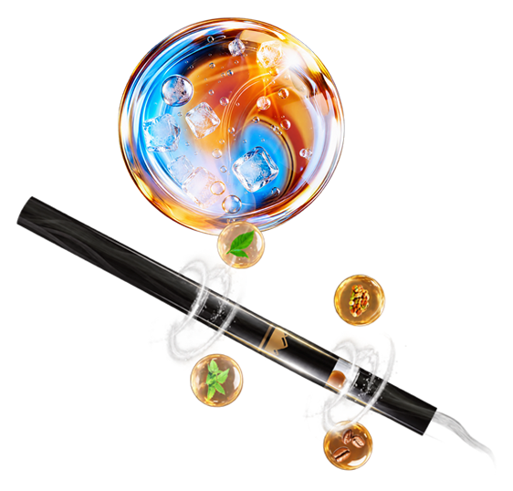
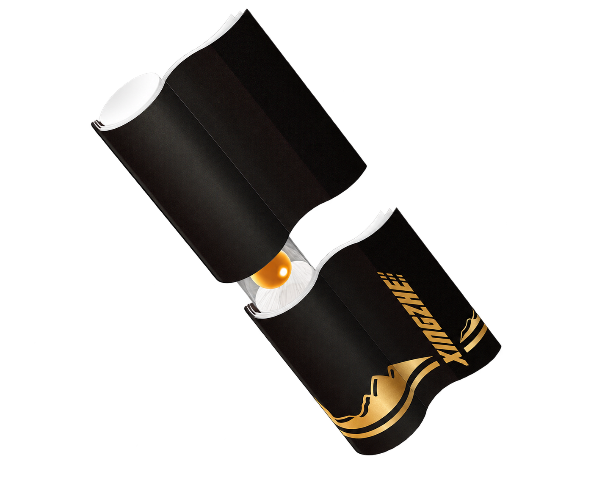
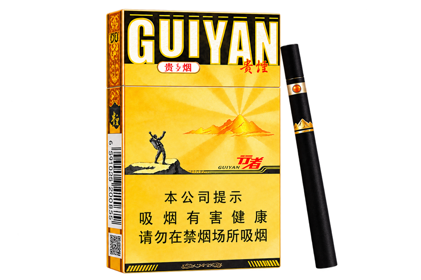

心所向
行致远
一支咖啡爆珠细支
一次风味探索的远征
行者，不止于路途
一支咖啡爆珠细支
一次风味探索的远征
行者，不止于路途
创想家品系定位 · 味觉拓疆者
“创享家”品系是贵烟品牌“破坏式创新”基因的 3.0 进化
凝聚品牌的文化力、感知度与创造力
旨在成为年轻一代敢想敢为、自由生长的“破壁”图腾
产品定位
将清爽冰感与咖啡醇香融入一次味觉体验
续写“陈皮香”、“国酒香”之后的味觉探索

心所向 行致远
产品介绍
本名：贵烟（细支行者）
花名：山咖啡/冰小咖/冰行者

研发理念
以感知为中心，全面提升产品体验

经典黄黑配色，延续行者基因
植绒水松纸，透明视窗设计
3.5mm 大径爆珠，内蕴冰咖风味

薄荷清凉先行，咖啡醇香随后
一颗冰咖爆珠，融合双重风味
坚果韵调温润，叠加绵柔甜香
多重香气交融，层次自然展开

全新姿态回归，唤醒行者精神
敢于探索前路，心向自由远方
人物画像
目标消费者锁定 19-50岁的都市先锋人群
户外探索者
穿过一片安静的林，
听风、鸟鸣和自己的呼吸。
世界很大，足够装下许多问题；
脚下这一步，又让一切变得简单。
走进山野，也走近自己。
06 / MADE WITH CARE · 品质创造者
一张图纸，一次推敲，
把模糊的念头变成清晰的轮廓。
选择、调整，再重新开始。
那些不易被看见的耐心，
最终会留在作品的细节里。
06 / EVERYDAY ORIGINAL · 潮流先锋者
留出一点时间，认真做一杯咖啡。
尝试不同的比例，记录今天的灵感。
无需复制谁的标准，
把喜欢的细节慢慢积攒，
日常，也能成为自己的创作。